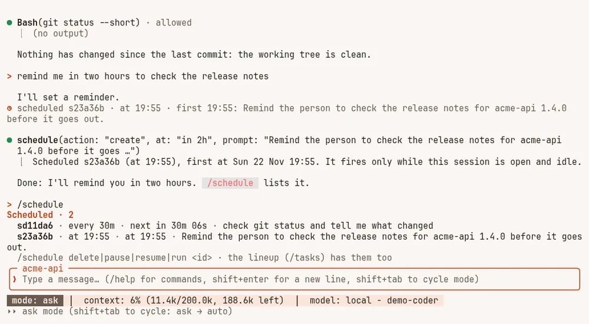
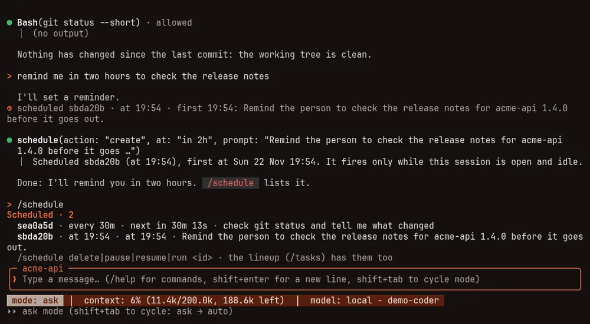
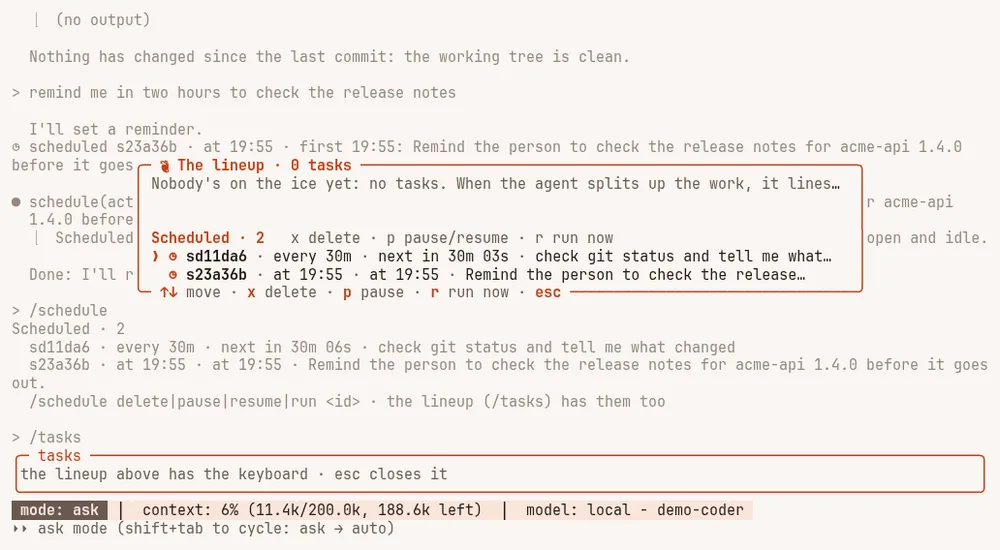
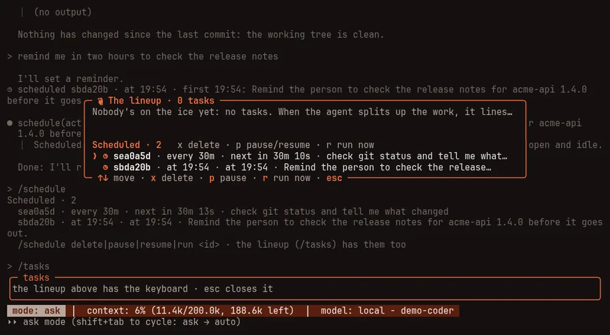
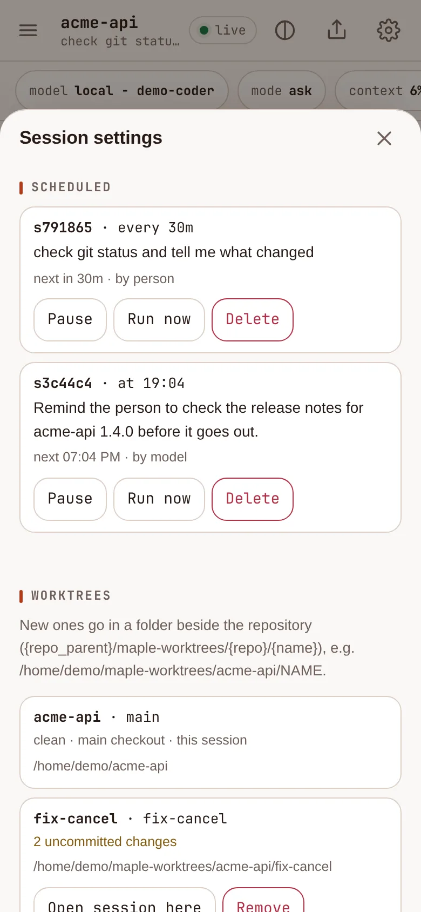
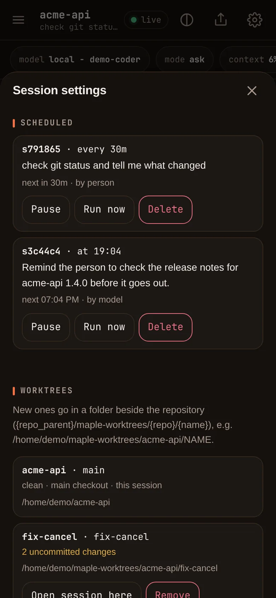

GuidesThe agent12 min read
Scheduled work #
On this page
The agent can come back later. You, or the agent, can schedule a prompt to run at a time, on a cron schedule, or every so often ("check the build every 15 minutes", "write the standup notes at 9:05 on weekdays"), and the agent can set itself a wake-up to look at something that takes a while. A job runs while the session is open and idle. If you turn it on, a job can also be durable: installed with your system's own timers, so it runs even while Maple Harness is closed.
In plain words #
- What it is. A prompt that starts a turn later, once or again and again.
/loop 10m check the deployruns it now and every ten minutes. The model can schedule work too, with itsscheduleandwakeuptools, and each job it makes is shown in the conversation. - Why you want it. Watching a deploy, re-running a flaky check, a reminder to look at a long build: the agent comes back when it should, and you do not have to keep asking.
- What to do. Nothing, to start.
/schedulelists the jobs, and the lineup (/tasks,Alt+T) shows them under Scheduled, wherexdeletes one,ppauses it andrruns it now. Your phone's session sheet has them too. - What stays the same. A scheduled turn is not you typing. Its tools ask as they always do, and in auto or yolo mode they still ask. Your allow rules still let their calls through. In such a turn, scheduling more work or setting a wake-up asks too, so a job cannot keep itself going unasked.
- What it never does. A job never fires in the middle of a turn, and a fire it misses is not caught up later. A job never runs on its own while the harness is closed, unless it is durable, and only you can approve a durable job.
Make a job #
From the message box:
/loop 10m check the deploy and tell me when it is greenThat runs the prompt now, then every ten minutes for up to seven days. /loop 10m --until "gh pr checks 123" …
ends on its own once that check passes, and --max and --budget bound it: see Loops. Without an interval, the agent paces itself:
/loop watch the CI run and tell me when it finishesIt runs now, and when it is done the agent sets its own wake-up (one minute to an hour away) for when it is worth looking again, or stops when there is nothing more to wait for.
The agent can also schedule work when you ask for it in your own words ("remind me at 4pm to check the release notes", "run the smoke test every hour this afternoon"). When it does, a line shows what it made:
◷ scheduled s1a2b3c · every 1h · first 15:00: run the smoke test and summarise any failures

/schedule after a /loop 30m and a reminder asked for in words. A demo setup with a scripted model.| A job set with | Means | Example |
|---|---|---|
at | Once, at a time | 09:05, 2026-11-23 09:05, in 20m |
every | Again and again, this far apart (at least a minute) | 15m, 2h, 1h30m |
cron | On a cron schedule, in your local time | 5 9 * * 1-5 (9:05 on weekdays) |
| a wake-up | The agent comes back once, after 60 to 3600 seconds | wakeup(delay_seconds: 300, reason: "the deploy takes a few minutes") |
When a job fires #
Only while the session is open and idle, between turns. Its turn starts with a line such as:
◷ Back at 9:05, eh: write the standup notes from yesterday's commits (cron 5 9 * * 1-5) ↳ a held turn: its tools askA held turn. The person is not asking for this work right now, so the turn is held, as a turn another agent's
message starts is: in auto or yolo mode its tools still ask, and your own allow rules still apply. When nobody
answers, the approvals timeout applies: that one call is denied after harness.approvals.timeout, the
denial is recorded, and the turn goes on. The model is told the turn was started by scheduled work, not typed by you
just now.
Missed fires are not caught up. A fire that comes while a turn is running, or while the session is closed, is skipped. A line says so (at most one every fifteen minutes for a job), and the next turn tells the model which fires were missed and why, so it can say so or run the job now.
Several at once. Jobs that come due together start one turn.
A budget, if you want one. harness.schedule.fire_budget (off by default) caps the AI units the turn of one
fire may spend. Past it the turn is stopped, with a line saying what it spent; the job itself stays and fires again
at its next time. For a model that reports no AI units, the spend is estimated from the prices your proxy knows.
Small offsets. A recurring job runs a few seconds after its time (at most 90 seconds, always the same amount for the same job), so many jobs set for 9:00 do not all start in the same second. A one-time job set on the hour or half hour may run up to 30 seconds late for the same reason.
Clock changes. A cron time the clock skips when it springs forward (2:30) runs as the clock reads once it has jumped (3:30). A time the clock passes twice when it falls back (1:30) runs once.
Limits #
| Limit | Value |
|---|---|
| Jobs per session | 20, besides one wake-up |
| Wake-ups | One at a time: a new one replaces the earlier one |
| Recurring jobs | Seven days: past that, a job fires once more and is removed, and /schedule says "its last" beside it |
| Shortest interval | One minute |
| Furthest one-time job | A year ahead |
See and change the jobs #
/schedulelists them: id, schedule, next fire, the last result, and the prompt./schedule delete <id>,/schedule pause <id>,/schedule resume <id>and/schedule run <id>act on one.- The lineup (
/tasks,Alt+T): the Scheduled group, withxto delete (theny),pto pause or resume andrto run one now. - Your phone. The session sheet (the gear) lists the jobs. A device that drives sessions has Pause, Delete (tap twice) and Run now for each one. A watch-only device sees the list and cannot change it. A shared link and a device limited to some sessions see neither.
maple-harness agentsshows, for each running session, how many jobs it has and when the next one fires.


x, p and r act on the selected job. A demo setup with a scripted model.

/clear keeps the jobs: /schedule delete removes one. A session's jobs are saved in the session, so --resume (and --session, --continue) brings them back. Fires
that came due while it was closed are missed, and the first turn says so.
Durable jobs #
A durable job runs whether or not Maple Harness is open: on a schedule you approved, headless, in this project's folder, resuming this session's conversation. Use one for work that must happen while you are away, like a nightly check.
Off by default. Turn them on with harness.schedule.durable: on (in /settings, or config.yaml). Until then
the agent can only make session-only jobs.
You approve each one. The agent can only propose one (durable: true). You are always asked, in every mode,
yolo included, with what it would run, where, how often, and how to remove it. The agent can pause or delete its
durable jobs, never resume one: resuming is yours (/schedule resume, maple-harness schedule resume).
The model asks to install a durable scheduled job: it runs even while Maple Harness is closed.
job s7f00d1 · cron 0 3 * * * · first Tue 24 Nov 03:00
prompt run the full test suite and write a short report of any failure
where /home/you/projects/shop (session brave-moose)
how headless, in the sandbox, questions refused, at most 1 AI units, 2m tokens and 30m a run
removed maple-harness schedule rm s7f00d1, /schedule delete s7f00d1, or the phone's session sheetA durable job's prompt is at most 2,000 characters, and you are shown all of it. The question is approved one at a time: "always" is never offered for it, a shared link cannot approve it, and if
nobody answers it is refused and nothing is installed. A run with no terminal (--prompt, --rpc, serve, an A2A
agent) never offers the scheduling tools at all.
How a durable run behaves #
| Where it runs | A systemd user timer on Linux, a launchd agent on macOS, under your own user. Nothing is installed system-wide, and nothing secret is written into the timer |
| What it runs | maple-harness --session <name> --prompt <the job's prompt>, in the job's folder |
| Sandbox | Always, strictly: a command runs contained or not at all (on a machine with no sandbox backend, every command is refused), and none leaves the sandbox. With harness.sandbox.mode: off the job does not run, and its last result says why |
| Questions | Refused at once: nobody is there to answer. The run is held for its whole life, so permission.mode: auto or yolo answers nothing: only what your allow rules cover runs. Each refusal is recorded |
| Memory | Under your memory cap for a session (harness.limits.session_memory), for the whole run: the harness and every command it starts together (Linux with a user systemd) |
| Tokens | At most harness.schedule.durable_max_tokens tokens a run (2 million by default), sent and received over all its requests, its subagents' included. Counted from the run's own requests, so it applies whatever the model reports, a local model included. Past it, the run is stopped cleanly and its result says so |
| Spend | At most harness.schedule.durable_budget AI units a run (1 by default). Checked as the run goes, so one reply can go over; past it, the run is stopped. For a model that reports no AI units, they are estimated from the prices your proxy knows for it, and the result says it is an estimate. A local model costs no AI units; a model with no known price (or one priced only in dollars) cannot be held to this budget, and the result says so: the token cap and the time limit still apply |
| Time | At most harness.schedule.durable_timeout a run (30 minutes by default) |
| Stopping | Everything a run starts ends with it: when it finishes, reaches a limit, or is stopped (systemctl --user stop maple-schedule-<id>.service, or Ctrl-C on a schedule fire you started), the commands it left running are stopped too, background ones and those in a memory cap of their own included. A stop from outside is recorded as its result |
| Results | Kept beside the job: each run's result, AI units (or the estimate), tokens and refusals (maple-harness schedule show <id>), and its run journal. Sent through harness.notifications (the scheduled event, on by default once you have a destination), and to a paired phone through the gateway when it runs. A message says the project and the job's id, never the prompt or the output |
| The session is open | When the session is open in a harness at that moment, the job is handed to it as a message instead (a held turn, after the turn that runs). Two programs never write the same conversation |
| Missed | If the computer was off or asleep at its time, it runs when the computer is back, finds itself late, records "missed" and does not run the prompt. Nothing is caught up |
| Expiry | A recurring durable job lives seven days, like any other, then is removed with its timer |
| Its session deleted | At its next time the job is removed with its timer, rather than start a new conversation by that name |
Remove a durable job #
Any of these removes the job and its timer:
maple-harness schedule list # every durable job on this machine, every session's
maple-harness schedule rm s7f00d1 # remove one (several ids at once work too)
maple-harness schedule pause s7f00d1 # keep it, but stop its timer until `schedule resume`In the session that made it: /schedule delete s7f00d1, or x on its row in the lineup. On your phone: Delete
on its card. schedule list also points out a timer left without its job (from a folder you deleted by hand), and
schedule rm <id> removes that too.
What is on disk, so you can check it yourself: the job file in your Maple Harness config folder, under
schedule/jobs/, its run journals under schedule/runs/, and on Linux two files, maple-schedule-<id>.service and
maple-schedule-<id>.timer, in ~/.config/systemd/user/ (systemctl --user list-timers 'maple-schedule-*' shows
them); on macOS ~/Library/LaunchAgents/com.kinncj.maple-schedule-<id>.plist. A timer file you edited by hand is
left alone, and said so.
Plan mode #
While planning the agent can list the jobs, and nothing else: making, deleting, pausing a job and setting a wake-up wait for the plan to be approved.
Settings #
| Key | Default | What it does |
|---|---|---|
schedule.jobs | on | Scheduled work in a session: the schedule and wakeup tools, /loop and /schedule. off leaves the tools out (from the next session) and fires nothing |
schedule. | off | on lets a job be installed with your system's timers, each one approved by you |
schedule. | 1 | The most AI units one durable run may spend (above 0, at most 100); estimated from known prices for a model that reports none |
schedule. | 2m | The most tokens one durable run may use, whatever its model reports: 10k to 1000m (2000000, 500k and 2m all work) |
schedule. | 30m | The longest one durable run may take: 10m, 30m, 1h or 2h |
schedule. | off | The most AI units the turn of one fire of a session's own job may spend (above 0, at most 100). Past it the turn is stopped and says why; the job stays. Estimated from known prices for a model that reports none |
All six are in /settings (under Schedule) and in config.yaml under harness.schedule.
Technical notes #
- A session's own jobs are saved in its session file and fire only in the full-screen terminal (and a session it
shares with your phone).
--prompt,--repl,--rpc,serveand A2A agents do not offer the tools. - A job's fire is appended at the end of the conversation, after what is there, so the provider's prompt cache keeps working.
- A durable job's timer is set for its next run only; each run sets the one after. The schedule is read by Maple Harness itself, so cron, offsets, clock changes and expiry behave exactly as they do for a session's own jobs.
- Each durable run's journal is the same file as
--json-journalwrites: counts, commands and paths, never prompts or outputs. The token cap and the budget are not read from it: the run counts its own requests. - On Linux with a user systemd, a run's harness and every memory-capped command it starts go in one slice of the
run's own (
maple-run-<id>-p<pid>.slice, insidemaple-run-<id>.slice), stopped when the run ends; the timer's service stops the job's slice too when it stops. Without systemd, and on macOS, the run's process tree is followed and whatever is left in it is stopped. - If
schedule fireitself is killed outright (akill -9), the run's harness notices that it is gone, stops everything it started and ends. On Linux a command's leftover child (a background job whose shell ended) is still found; on macOS one started and left between two looks at the run (every half second) can be missed.
Tested on Linux, with stand-ins for systemctl and launchctl: no real systemd timer or launchd agent was installed
by the tests. macOS (launchd) has not been tried on a real Mac, and Windows has no durable jobs.
See also #
- Loops A goal it works toward until a check passes, a
/loopthat ends on its own, Stop hooks and shell loops. - Approvals when nobody answers What happens to a question nobody answers, in a held turn or a run with no terminal.
- Background commands and monitors Commands that run while the agent works, and wake it when they end.
- Control it from your phone The session sheet, where your jobs are listed.
- Harness settings Every
harness.*setting, includingschedule.